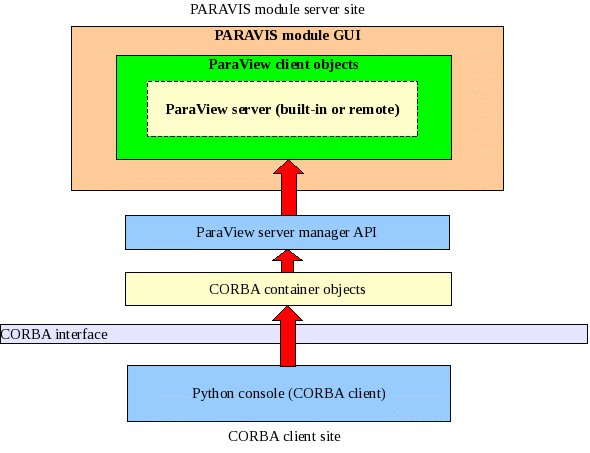

PARAVIS development
General architecture of PARAVIEW extractor
3.Automatic generation of container classes
3.3. Definition of IDL interfaces
3.4. Base interface and its implementation
3.6. Overloaded methods definition
3.7. Creation of objects in Python
3.8. servermanager.py and simple.py
This document describes development of ParaView server manager API for PARAVIS module. The new API must provide following features:
Define interaction between two different processes: Python console and PARAVIS GUI defined in SALOME desktop.
Make possible to manage PARAVIS GUI and ParaView server data from Python scripts in synchronized mode.
The new API must be similar as much as possible to the API provided by servermanager.py module from ParaView in order to make possible launching the same scripts as in ParaView as in PARAVIS without modifications.
General architecture and development features of this task are described below.
Main components of PARAVIS architecture and their relations can be represented as on the following picture:

The usual way to implement SALOME module is to develop a Data/Algorithms engine unit as a CORBA server and module GUI as a CORBA client. But in case if we need to use GUI and Algorithms from Python console (what usually is an external process) in synchronized mode then we have to implement them together as a CORBA server within a one process.
On the diagram above following component are shown:
PARAVIS module GUI which is responsible for creation of necessary widgets within SALOME Desktop, initialization of ParaView client objects, connection of ParaView GUI objects to created widgets.
ParaView client code is a set of ParaView objects what provides ParaView GUI.
ParaView server for PARAVIS module can be used as built-in (by default) as remote. For connection to remote server it is necessary to use corresponded menu commands connect/disconnect as it is used in standard ParaView GUI client.
ParaView server manager API is a set of classes provided by ParaView for definition of API for Python interpreter.
Container objects - implementation of CORBA servants for wrapping server manager object instances and redirection of CORBA interface calls to corresponded server manager object.
In PARAVIS_SRC/idl/ directory:
PARAVIS_Gen.idl – defines main interfaces to PARAVIS module.
PARAVIS_Gen_Types.idl – defines data collection types.
hints_paravis – defines sizes of arrays missed in standard VTK hints file. If some functions of VTK classes which return array data are not extracted then it is necessary to edit this file in order to describe missed functions.
pythonIDL.py – command file which is used for extraction of IDL interfaces to Python files. This is modification of similar file from omniidl product what takes into account overloading of methods in class.
vtkWrapIDL.c – source file for building extraction executables: vtkWrapIDL, vtkWrapIDL_CC, vtkWrapIDL_HH.
In PARAVIS_SRC/src/PVGUI directory:
PARAVIS_Gen_i.cc and PARAVIS_Gen_i.hh – implementation of PARAVIS_Gen interface.
PV_Events.h – defines events for synchronization of CORBA client calls with main GUI events queue.
Other files are related to GUI definition and auxiliary tools.
In PARAVIS_SRC/src/PV_SWIG directory:
paravis.py – general Python module for PARAVIS. It installs connection to PARAVIS CORBA server, defines a variable myParavis in order to provide acces to PARAVIS_Gen functions, creates a set of empty constructors for all extracted ParaView classes.
paravisSM.py – modified copy of servermanager.py module from ParaView. Modification done according to conventions defined by paravis.py module and features of working with CORBA server.
pvsimple.py – modified copy of simple.py module from ParaView. Modifications done because of the same reasons.
CORBA servant classes for wrapping of server manager API classes is generated automatically. The process of building PARAVIS module with generation of wrappers is performed in the following way:
Call build_configure script. During performing of this script it performs some standard steps of SALOME module building and calls a Python command file getwrapclasses.py is called. This procedure creates a list of ParaView and VTK class names what has to be extracted. This list includes all vtkSM* classes and vtk* classes what are referred by previous group of classes. Results of build_configure step are:
idl/wrap.am – defines variables what lists all interfaces (*.idl and *.cc files) what will be generated.
idl/vtkWrapIDL.h – defines a list of extracted classes in form of char* array.
src/PVGUI/wrap.am - defines variables what lists all servant classes (*.hh and *.cc files) what will be generated.
src/PVGUI/PARAVIS_CreateClass.cxx is a C++ file what contains a one function CreateInstance. This function creates a servant class which corresponds to a given name of original ParaView/VTK class.
Launch configure script from a build directory. This step is similar to the same steps in other SALOME modules and does not have any special related to automatic generation of CORBA interfaces.
Call make command in build directory. This command does following steps related to automatic generation:
Builds vtkWrapIDL executable in idl directory what is responsible for generation of IDL files using names of classes to wrap. This executable analyzes related header files for classes from vtkWrapIDL.h and defines corresponded IDL file.
Defines all IDL files with help of this executable and launches standard SALOME compilation for idl directory.
Compiles vtkWrapIDL_CC and vtkWrapIDL_HH executables in src/PVGUI directory what are responsible for generation of header files (*.hh) and implementation files (*.cc) for servants classes.
Generation of servant classes with help of these executables and building the library.
Call make install command in build directory. This will finalize building of libraries and generate Python files for IDL interfaces.
Note:
make command can not be used with -j key because extraction of parent classes should be done before extraction of child classes.
Process of IDL interfaces generation has to respect following restrictions of IDL format:
IDL does not support several functions with the same name within a one interface definition. Even they have different parameters (overloading of methods as in C++). Also this is not supported between parent and its ancestors.
In context of PARAVIS it is difficult to extract methods what accept or return “void*” data type. In IDL it can be described as “ANY” data type, but in context of ParaView it is not clear to what type it has to be casted.
IDL interfaces extracted following to the next principals:
All interfaces are inherited from a common parent interface Base.
Each interface includes all extracted methods of its prototype class including all its parents.
If the prototype class contains overloaded methods (methods with the same name) then each appearance of this method name is supplied with index.
If prototype class contains methods which return or accept void* then these methods are ignored.
If prototype class contains methods which return array (int*, double*, ...) which size is not defined in “hints” or “hints_paravis” files then these methods are ignored.
If prototype class contains methods which get a pointer to function then these methods are ignored.
If a method of prototype class returns/accepts a pointer on ParaView/VTK class instance then interface will return/accept Base interface.
Base interface is defined in order to satisfy following points:
Sometimes we need to have a possibility to use a servant as a pointer on a common interface.
We need to have possibility to define a common auxiliary methods for all generated interfaces which out of ParaView/VTK definitions.
We need to have a base implementation for all servant classes.
Currently Base class implements smart pointer on a vtkObjectBase instance and several methods to Get/Set this pointer. By default each ancestor class initializes this pointer with help of New() method. This useful for classes what contain static methods. But after this pointer can be reinitialized from outside what is used when we need to have access to certain instance.
Also Base interface introduces a method IsSame(Base theOther). We need this method when it is necessary to compare two ParaView objects in Python process. In fact if we will apply standard operation “==” then we will compare two wrapper instances instead of ParaView objects instances. So, method IsSame(Base theOther) checks if two wrappers refer to the same ParaView instance or not.
Some calls of server manager API functions cause a modification of GUI state: creation of new widgets, update of widgets state, visualization of presentable objects in viewers. In our case we have two different processes: Python console and PARAVIS GUI. At the same moment the Python console “manages” PARAVIS GUI with help of server manager API functions calls. So, for correct performance of Python scripts the calls of Python commands have to be synchronized with PARAVIS GUI events queue.
For this purposes all calls to server manager API from servant are additionally wrapped by event classes. Therefore implementation of servants methods accords to following general template:
Get an encapsulated pointer on VTK object instance.
Create a special event instance for target function call.
Launch event and wait while it returns.
Get result from event (if result is supposed).
Return this result as result of servant method.
For example:
Class vtkSMProxyManager has a method GetProxy. This method implemented in corresponded servant class as following:
|
# |
Code |
Remarks |
|
1 |
//C++: vtkSMProxy *GetProxy (const char *groupname, const char *name); |
|
|
2 |
struct CreateEventName(GetProxy_0): public SALOME_Event |
Generation of unique event class name with help of a special macros |
|
3 |
{ |
|
|
4 |
typedef ::vtkSMProxy* TResult; |
|
|
5 |
TResult myResult; |
Definition of the return type |
|
6 |
typedef ::vtkSMProxyManager* TObj; |
|
|
7 |
TObj myObj; |
Definition of parameters |
|
8 |
typedef char* TParam0; |
|
|
9 |
TParam0 myParam0; |
|
|
10 |
typedef char* TParam1; |
|
|
11 |
TParam1 myParam1; |
|
|
12 |
|
|
|
13 |
CreateEventName(GetProxy_0)(TObj theObj, TParam0 theParam0, TParam1 theParam1): |
Constructor of event. Defines object instance and necessary parameters |
|
14 |
myObj(theObj), myParam0(theParam0), myParam1(theParam1) |
|
|
15 |
{ } |
|
|
16 |
|
|
|
17 |
virtual void Execute() |
Execution method. |
|
18 |
{ |
|
|
19 |
myResult = myObj->GetProxy(myParam0, myParam1); |
Call of target method |
|
20 |
} |
|
|
21 |
}; |
|
|
22 |
// |
|
|
23 |
PARAVIS_Base_ptr vtkSMProxyManager_i::GetProxy_0 (const char *temp0, const char *temp1) { |
Implementation of servant method |
|
24 |
try { |
|
|
25 |
char *c_temp0 = CORBA::string_dup(temp0); |
Getting parameters |
|
26 |
char *c_temp1 = CORBA::string_dup(temp1); |
|
|
27 |
::vtkSMProxy* avtkSMProxy = (getVTKObject() != NULL) ? ProcessEvent(new CreateEventName(GetProxy_0)((::vtkSMProxyManager*)getVTKObject(), c_temp0 , c_temp1)):NULL; |
If wrapped object is defined then create event and launch it. Finally it will return result. |
|
28 |
|
|
|
29 |
if(avtkSMProxy == NULL) { |
|
|
30 |
return PARAVIS::vtkSMProxy::_nil(); |
|
|
31 |
} |
|
|
32 |
PARAVIS_Base_i* aPtr = ::CreateInstance(avtkSMProxy, avtkSMProxy->GetClassName()); |
Create a wrapper (servant) class according to class name of result object |
|
33 |
aPtr->Init(avtkSMProxy); |
Initialize the internal pointer of wrapper class by result |
|
34 |
return aPtr->_this(); |
Return wrapper instance as result |
|
35 |
} catch(...) { |
|
|
36 |
MESSAGE("GetProxy - Unknown exception was occurred!!!"); |
|
|
37 |
return PARAVIS::vtkSMProxy::_nil(); |
|
|
38 |
} |
|
|
39 |
} |
|
Classes of ParaView server manager API have overloaded methods. As it is mentioned above description of IDL interface prohibits using of the same name for various methods even they have different parameters. To avoid this limitation we have to add index to name in each appearance of overloaded method. But at Python script level it is necessary to avoid using of function names with indexes. It is necessary to provide possibility to use methods as they was defined in API of corresponded class.
For tis purposes we redefined standard IDL to Python wrapping in order to add a function which has a name of overloaded method and accepts any parameters. This function analyzes input parameters and selects what function (with which index) it has to be called.
For example:
vtkObject class contains definition of overloaded functions:
void RemoveObservers (unsigned long event);
void RemoveObservers (const char *event);
In IDL interface these function will be defined as:
void _RemoveObservers_0 (in long temp0);
void _RemoveObservers_1 (in string temp0);
These functions will be wrapped by standard IDL to Python wrapper as it is (with indexes). But we need to call this function in Python as they were defined in vtkObject definition – by name “RemoveObservers”. For this purposes we modify IDL to Python wrapper in order to add the following function:
def RemoveObservers(self, *args):
if len(args) == 1 and (type(args[0]) in [IntType, LongType]):
return self.RemoveObservers_0(*args)
if len(args) == 1 and (type(args[0]) in [StringType]):
return self.RemoveObservers_1(*args)
print 'Warning: The corresponding method of RemoveObservers group is not found for ' + str(args)
After this we can use function RemoveObserves in Python as it was defined without indexes.
Creation of CORBA object on client side is not so trivial as usually. When client requests a creation of object then it has to be created:
CORBA client object instance on client side,
CORBA servant instance on server side
and both of them are connected to each other across CORBA interface.
More simplest way is to request an object from PARAVIS server interface PARAVIS_Gen. For this purposes a method CreateClass function in PARAVIS_Gen interface is defined. Also there is a function GetClassesList which returns list of names of extracted classes. Both these methods let to define a set of functions which looks like an object constructor for all extracted classes.
These definitions done in paravis.py module with help of createConstructors function. Result of this function is a set of functions which looks like vtkClassName(). These functions return an object instance which wraps a pointer on requested class vtkClassName instance with corresponded API.
For example call in Python console
> a = vtkSMProxyManager()
returns an instance of PARAVIS_Gen_vtkSMProxyManager object on client side which implements all methods of vtkSMProxyManager class readdressing them to incapsulated vtkSMProxyManager instance on server side.
In ParaView Python API is defined with help of two modules servermanager.py and simple.py. PARAVIS has corresponded modules paravisSM.py and pvsimple.py. Because of actions described above we got a set of Python interfaces which is very close to original Python API of ParaView. So, PARAVIS Python modules have fiew modifications in comparison to original ones. These modifications mainly related to:
Already mentioned problem with “==” operation to wrapper classes.
Impossibility to use observers.
Reimplementation of hidden code existing in ParaView which is called in Python console on its creation.
Providing access to Trace functionality.
Trace functionality in PARAVIS module is defined in GUI of module using already existing Python functions in ParaView.
Because this trace functionality is used for “Dump Study” functionality defined in SALOME then tracing is started automatically on loading of PARAVIS module and registers all actions during whole session. In case if there are no necessity tracing can be switched off in preferences dialog box. But it is necessary to take into account that dumping of study can't be done for PARAVIS module in this case.
To check the trace content there are two functions defined in pvsimple.py module and accessible in SALOME Python console:
PrintTrace() - this function prints trace directly to Python console
SaveTrace(fileName) – this function outputs trace into disk file according to given name.
According to SALOME general architecture each module independs from other modules by default. In general case adding of module to module dependency can be caused by necessity to transfer some data from one module to another. In this case a module consumer has to “know” about API of module supplier what is going to be used. If this API is not defined on a general module level then we have to use direct connection to module object instance what implements a necessary API.
In general algorithm of connected to a module-supplier API on a module-consumer side looks like following:
Find and load a module-supplier component CORBA object from active study.
Get a module-supplier engine from the component.
Using of the engine to get necessary data.